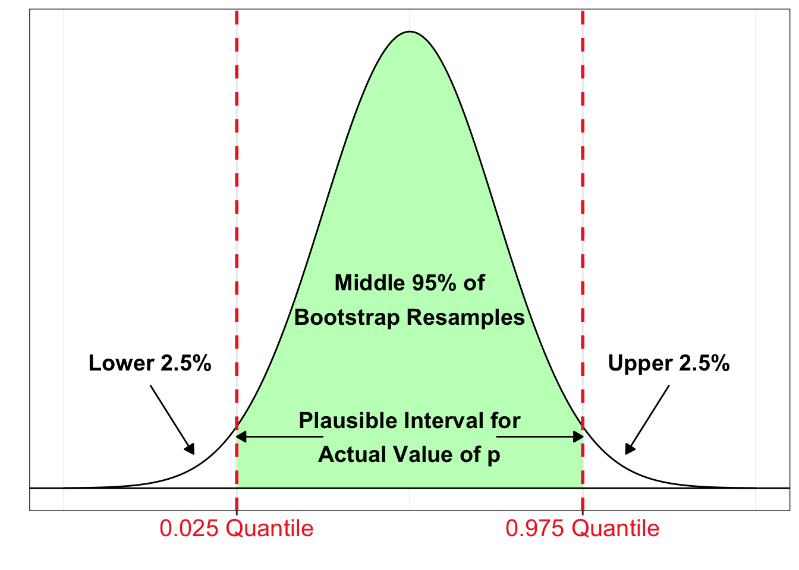
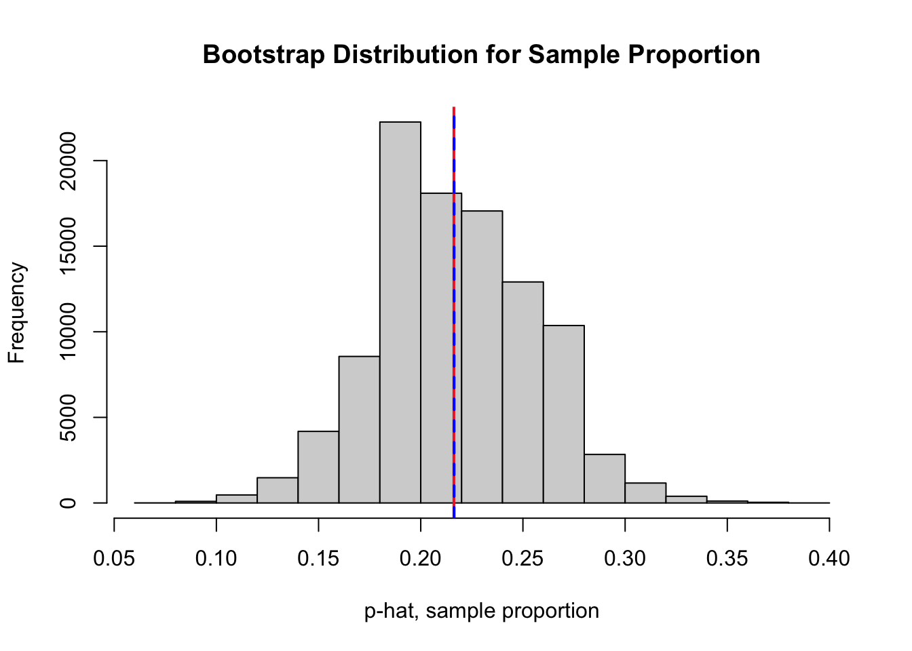
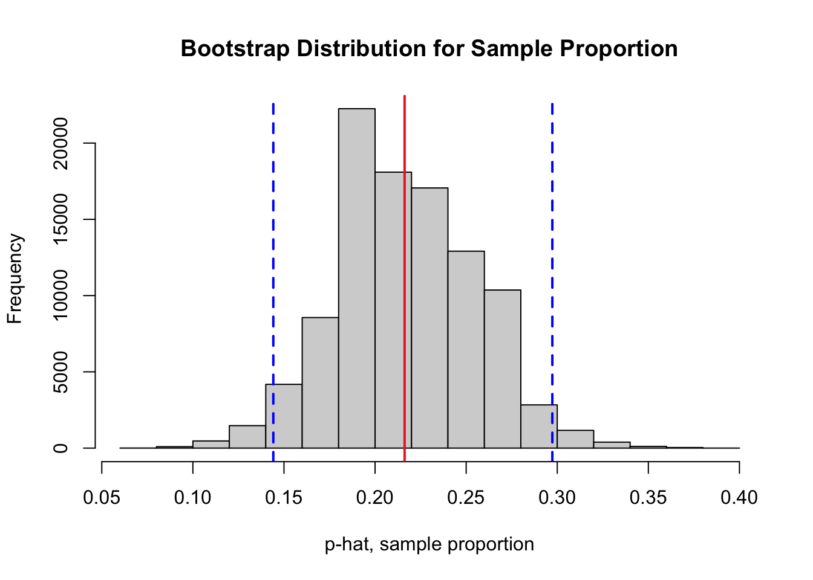
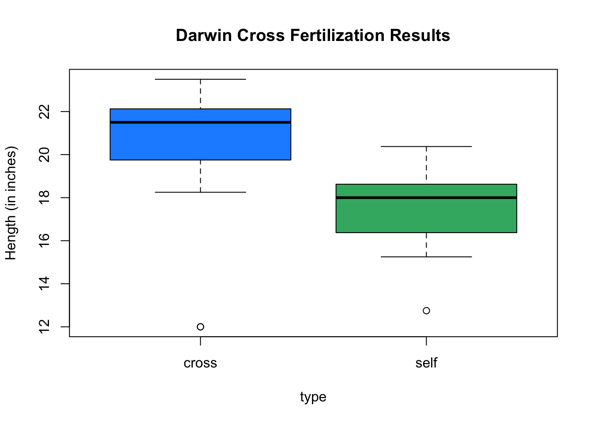

# be sure you have already installed the lattice package
library(lattice) # loading permute package5.2: Bootstrap Confidence Intervals

In our work with bootstrap distributions, we explored how we can used data from one random sample picked from a population with unknown parameters to construct an approximation for a sampling distribution. From a bootstrap distribution, we can define a new estimator:
- We defined the estimator \(\hat{\theta}_{\rm{boot}}\) as the mean (expected) value of the bootstrap distribution.
- We use the bootstrap standard error to estimate the variability or uncertainty in estimates due to the randomness of sampling.
- We defined the bootstrap estimate of bias as \(\mbox{Bias}_{\rm{boot}} \big( \hat{\theta}_{\rm{boot}} \big) = \hat{\theta}_{\rm{boot}} - \left( \mbox{observed sample statististic} \right)\).
- For example, in the case of estimating a population mean \(\mu\), we have \({\color{dodgerblue}{\mbox{Bias}_{\rm{boot}} \big( \hat{\mu}_{\rm{boot}} \big) = \hat{\mu}_{\rm{boot}} - \bar{x}}}\).
In this section we will discuss how we can use the bootstrap standard error to account for the uncertainty in our estimate and to incorporate that uncertainty in our final estimate.
Case Study: Ozone Concentration in New York City
Accoording to the Unites States Environmental Protection Agency (EPA)1:
Ozone (O3) is a highly reactive gas composed of three oxygen atoms. It is both a natural and a man-made product that occurs in the Earth’s upper atmosphere (the stratosphere) and lower atmosphere (the troposphere). Depending on where it is in the atmosphere, ozone affects life on Earth in either good or bad ways.
When the ozone concentration is greater, respiratory illnesses such as asthma, pneumonia, and bronchitis can become exacerbated. While the effects of short-term exposure to high ozone concentration are reversible, long-term exposure may not be reversible. The EPA sets Ozone National Ambient Air Quality Standards (NAAQS)2. “The existing primary and secondary standards, established in 2015, are 0.070 parts per million (ppm)”, or equivalently 70 parts per billion (pbb).
We will begin todays work with bootstrap distributions investigating the following question:
Is the population of New York City experiencing long-term exposure to unhealthy levels of ozone?
Loading NYC Ozone Data
It is very likely you do not have the package lattice installed. You will need to first install the lattice package.
- Go to the R Console window.
- Run the command
> install.packages("lattice").
You will only need to run the install.package() command one time. You can now access lattice anytime you like! However, you will need to run the command library(lattice) during any R session in which you want to access data from the lattice package. Be sure you have first installed the lattice package before executing the code cell below.
Summarizing and Storing the Data
In the code cell below we summarize a data frame3 named environmental from the lattice package and store the ozone concentration data environmental$ozone to a vector named nyc.oz.
summary(environmental) # numerical summary of each variable ozone radiation temperature wind
Min. : 1.0 Min. : 7.0 Min. :57.00 Min. : 2.300
1st Qu.: 18.0 1st Qu.:113.5 1st Qu.:71.00 1st Qu.: 7.400
Median : 31.0 Median :207.0 Median :79.00 Median : 9.700
Mean : 42.1 Mean :184.8 Mean :77.79 Mean : 9.939
3rd Qu.: 62.0 3rd Qu.:255.5 3rd Qu.:84.50 3rd Qu.:11.500
Max. :168.0 Max. :334.0 Max. :97.00 Max. :20.700 nyc.oz <- environmental$ozone # store ozone data to a vectorQuestion 1
We will use the sample data stored in nyc.oz to construct a bootstrap distribution that we can use to make predictions about the population of all times in New York City. Answer the questions below to get acquainted with the sample data.
Question 1a
How many observations are in the sample stored in nyc.oz? Describe the shape of the data in nyc.oz.
Solution to Question 1a
Question 1b
Based on the sample data in nyc.oz, give an estimate for the mean ozone concentration in New York City (over all days and times).
Solution to Question 1b
Bootstrap Distribution for a Proportion
The sample mean for ozone concentration is below the 70 ppb limit. However, from the plot in Question 1a, we see there are number of observations in the sample with an ozone concentration over 70 ppb.
sum(nyc.oz > 70)[1] 24What proportion of time in NYC is the ozone concentration greater than 70 ppb?
The sample proportion of observations with an ozone concentration greater than 70 pbb is \(24/111 \approx 0.2162\). We calculate the sample proportion in two different ways below. In both methods, we use the logical test nyc.oz > 70 to help count the number of observations greater than 70 pbb.
- Using a logical test in a
sum()command and dividing by the sample sizen. - Using a logical test in a
mean()command sums and divides by \(n\) at once.
# method 1
n <- length(nyc.oz) # number of observations in sample
sum(nyc.oz > 70) / n # sample proportion over 70 ppb[1] 0.2162162# method 2
mean(nyc.oz > 70) # sample proportion over 70 ppb[1] 0.2162162Both methods are equivalent and we see that
\[\hat{p} = 0.2162 = 21.62 \%.\] Thus use the plug-in principle, a reasonable estimate for the proportion of all time that the ozone concentration in NYC is over 70 ppb (we denote the population proportion \(p\)) is
\[ p \approx \hat{p} = 0.2612.\] How certain can we be in this estimate? If we pick another sample of observations, would we get a similar estimate for \(p\), or should we expect a lot of variability?
Question 2
Answer each part below to construct a bootstrap distribution for the sample proportion. Then use the result to answer the questions that follow.
Question 2a
Complete the code cell below to construct a bootstrap distribution for the sample proportion of observations with ozone concentration greater than 70 ppb.
Tip
There are two operations to complete inside the for loop:
- Pick a bootstrap resample from the observed sample
nyc.oz. - Calculate the proportion of observations in the bootstrap resample with ozone concentration greater than 70 ppb.
Solution to Question 2a
Replace all six ?? in the code cell below with appropriate code. Then run the completed code to generate a bootstrap distribution and mark the observed sample proportion (in red) and the mean of the bootstrap distribution (in blue) with vertical lines.
N <- 10^5 # Number of bootstrap samples
boot.prop <- numeric(N) # create vector to store bootstrap proportions
# for loop that creates bootstrap dist
for (i in 1:N)
{
x <- sample(??, size = ??, replace = ??) # pick a bootstrap resample
boot.prop[i] <- ?? # compute bootstrap sample proportion
}
# plot bootstrap distribution
hist(boot.prop,
breaks=20,
xlab = "p-hat, sample proportion",
main = "Bootstrap Distribution for Sample Proportion")
# red line at the observed sample proportion
abline(v = ??, col = "firebrick2", lwd = 2, lty = 1)
# blue line at the center of bootstrap dist
abline(v = ??, col = "blue", lwd = 2, lty = 2)Question 2b
Based on your answer to Question 2a, calculate bootstrap estimate for bias. Note answers will vary due to the randomness of bootstrapping in Question 2a.
Solution to Question 2b
# calculate bootstrap estimate of bias
Question 2c
Based on your answer to Question 2a, calculate the bootstrap estimate for the standard error of the sampling distribution for sample proportions. Note answers will vary due to the randomness of bootstrapping in Question 2a.
Solution to Question 2c
# calculate bootstrap standard error
Comparing Bootstrapping to CLT
Recall the Central Limit Theorem (CLT) for Proportions,
\[\widehat{P} \sim N \left( \mu_{\hat{P}}, \mbox{SE}(\widehat{P}) \right) = \left( {\color{tomato}{p}}, \sqrt{\frac{{\color{tomato}{p}}(1-{\color{tomato}{p}})}{n}} \right).\]
The population proportion \(p\) is unknown, but we can use the plug-in principle and use the sample proportion \({\color{tomato}{\hat{p} = 0.2162}}\) in place to estimate the sampling distribution for the sample proportion:
\[\begin{aligned} \widehat{P} \sim N \left( \mu_{\hat{P}}, \mbox{SE}(\widehat{P}) \right) &= \left( {\color{tomato}{p}}, \sqrt{\frac{{\color{tomato}{p}}(1-{\color{tomato}{p}})}{n}} \right) \\ & \approx N\left( {\color{tomato}{0.2162}}, \sqrt{\frac{{\color{tomato}{0.2162}}(1-{\color{tomato}{0.2162}})}{111}} \right) \\ & \approx N( 0.2162, 0.0391). \end{aligned}\]
| Method | Mean of Sampling Distribution | Standard Error |
|---|---|---|
| Bootstrap4 | \(0.2164\) | \(0.0390\) |
| CLT with \(\hat{p}\) in place of \(p\) | \(0.2162\) | \(0.0391\) |
The two methods, bootstrap distribution and the estimate from using the CLT, give us consistent results!
Interval and Point Estimates
Usually when estimating an unknown population parameter, we give an interval estimate that gives range of plausible values for the parameter by accounting for the uncertainty due to the variability in sampling.
- For example, using both mean and standard error from the bootstrap distribution in Question 2c, we could say
\[ p_{\rm over} \approx \hat{p}_{\rm boot} \color{dodgerblue}{\pm \mbox{SE}_{\rm boot} \left( \widehat{P} \right)} = 0.216 \color{dodgerblue}{\pm 0.039}.\]
An interval of plausible values for \(p\) is from \(0.177\) to \(0.255\).
An estimate for a parameter with a single value is called a point estimate.
- Since there is variability from sample to sample, it is not very likely that our point estimate is perfectly accurate, but it is likely close.
- We get a very specific estimate that is very unlikely to equal the actual parameter value.
- This is like trying to catch a fish with a spear.
An estimate for a parameter with a range of values is called an interval estimate.
- By building some uncertainty into our estimate, we can be more confident the actual value of the parameter is somewhere inside the interval.
- However, our estimate is less specific.
- This is like trying to catch a fish with a net.
- We are more likely to catch fish even if we do not know specifically where the fish is!
We frequently estimate parameters with interval to account for the variability of sample statistics.


A 95% Bootstrap Percentile Confidence Interval
The interval between the \(2.5\) and \(97.5\) percentiles (or \(0.025\) and \(0.975\) quantiles) of the bootstrap distribution of a statistic is a 95% bootstrap percentile confidence interval for the corresponding parameter.

- If most of the sample statistics are located in a certain interval of the bootstrap distribution, it seems plausible the true value of the parameter is in this interval!
- We would say we are 95% confident that the interval contains the actual value of the population parameter since 95% of the bootstrap resamples are inside this interval.
- In general, confidence interval estimates give a range of plausible values for the unknown value of the parameter.
Question 3
In Question 2, we created a bootstrap distribution (stored in the vector boot.prop) for the sample proportion of times the ozone concentration exceeds 70 ppb. One possible bootstrap distribution is plotted below. Bootstrap distributions will vary slightly depending on the 100,000 bootstrap resamples that are randomly selected.
# plot bootstrap distribution
hist(boot.prop,
breaks=20,
xlab = "p-hat, sample proportion",
main = "Bootstrap Distribution for Sample Proportion")
# red line at the observed sample proportion
abline(v = mean(nyc.oz > 70), col = "firebrick2", lwd = 2, lty = 1)
# blue line at the center of bootstrap dist
abline(v = mean(boot.prop), col = "blue", lwd = 2, lty = 2)
Question 3a
Using the bootstrap statistics stored in boot.prop, find the lower and upper cutoffs for a 95% bootstrap percentile confidence interval for the proportion of all times the ozone concentration in NYC exceeds 70 ppb.
Tip
Recall the quantile() function in R. Run the command ?quantile for a refresher!
Solution to Question 3a
Replace all four ?? in the code cell below with appropriate code. Then run the completed code to compute lower and upper cutoffs for a 95% bootstrap percentile confidence interval.
# find cutoffs for 95% bootstrap CI
lower.boot.95 <- quantile(??, probs = ??) # find lower cutoff
upper.boot.95 <- quantile(??, probs = ??) # find upper cutoff
# print values to screen
lower.boot.95
upper.boot.95Based on the output above, a 95% bootstrap percentile confidence interval is from ?? to ??.
Question 3b
The code cell below plots a bootstrap distribution corresponding of the sample proportions stored in boot.prop along with two blue vertical lines to mark the lower and upper cutoffs for a 95% bootstrap percentile confidence interval. A red vertical line marks the value of the sample proportion we calculated from the original sample.
Run the code cell below to illustrate the confidence interval on the bootstrap distribution. There is nothing to edit in the code cell. Then in the space below, explain the practical meaning of the interval to a person with little to no background in statistics.
#################################
# code is ready to run!
# no need to edit the code cell
#################################
# plot bootstrap distribution
hist(boot.prop,
breaks=20,
xlab = "p-hat, sample proportion",
main = "Bootstrap Distribution for Sample Proportion")
# red line at the observed sample proportion
abline(v = mean(nyc.oz > 70), col = "firebrick2", lwd = 2, lty = 1)
# blue lines marking cutoffs
abline(v = lower.boot.95, col = "blue", lwd = 2, lty = 2)
abline(v = upper.boot.95, col = "blue", lwd = 2, lty = 2)
Solution to Question 3b
Interpret the confidence interval from Question 3a.
Question 3c
Sometimes, it is desirable to describe the interval as some value plus or minus some margin of error. Construct a symmetric 95% bootstrap confidence interval for the proportion of time the ozone concentration in NYC exceeds 70 ppb. Compare the symmetric confidence interval to your percentile confidence interval in Question 3a.
Tip
Recall for normal distributions, approximately 95% of the data is within 2 standard deviations of center of the distribution.
Solution to Question 3c
Replace each ?? in the code cell below with appropriate code.
?? - 2*?? # going 2 SE's below the observed sample proportion
?? + 2*?? # going 2 SE's above the observed sample proportionBased on the output above, a symmetric 95% bootstrap confidence interval is from ?? to ??.
Adjusting the Confidence Level
We would expect the actual value of the unknown population parameter to equal the corresponding statistic calculated from one of the 100,000 bootstrap resamples in our distribution. Since 95% of the bootstrap statistics are inside the confidence interval:
A 95% bootstrap percentile confidence interval has about a 95% chance of containing the actual value of the population parameter.
The confidence level is the success rate of success of the interval estimate. We can choose differenet confidence levels for an interval estimate:
- A 95% confidence level is most common.
- Other common confidence levels are 80%, 90%, 99% and 99.9%.
- We choose a confidence level. It is not something we calculate.
- What happens to an interval estimate when we change the confidence level?
Question 4
In Question 2, we created a bootstrap distribution (stored in the vector boot.prop) for the sample proportion of times the ozone concentration exceeds 70 ppb. In Question 3, we used the bootstrap distribution to construct a 95% bootstrap percentile confidence interval. In this question, we will investigate what happens when we change the confidence level.
Question 4a
Complete the first code cell below to give a 90% bootstrap percentile confidence interval to estimate the proportion of all time in NYC when the ozone concentration exceeds 70 ppb.
Then complete the second code cell to plot a histogram of the bootstrap distribution from with the upper and lower confidence interval cutoffs marked with vertical lines similar to the plot in Question 3b.
Solution to Question 4a
Based on the output below, a 90% bootstrap percentile confidence interval is from ?? to ??.
Replace all four ?? in the code cell below with appropriate code. Then run the completed code to compute lower and upper cutoffs for a 90% bootstrap percentile confidence interval.
# find cutoffs for 90% bootstrap CI
lower.prop.90 <- quantile(??, probs = ??) # find lower cutoff
upper.prop.90 <- quantile(??, probs = ??) # find upper cutoff
# print to screen
lower.prop.90
upper.prop.90Nothing to edit in the code cell below. Just be sure you first run the code cell above to calculate and store the cutoffs lower.prop.90 and upper.prop.90.
##################################
# code is ready to run!
# no need to edit the code cell
##################################
# plot bootstrap distribution
hist(boot.prop,
breaks=20,
xlab = "p-hat, sample proportion",
main = "Bootstrap Distribution for Sample Proportion")
# red line at the observed sample proportion
abline(v = mean(nyc.oz > 70), col = "firebrick2", lwd = 2, lty = 1)
# blue lines marking cutoffs
abline(v = lower.boot.90, col = "blue", lwd = 2, lty = 2)
abline(v = upper.boot.90, col = "blue", lwd = 2, lty = 2)Question 4b
Complete the first code cell below to give a 99% bootstrap percentile confidence interval to estimate the proportion of all time in NYC when the ozone concentration exceeds 70 ppb.
Then complete the second code cell to plot a histogram of the bootstrap distribution from with the upper and lower confidence interval cutoffs marked with vertical lines similar to the plot in Question 3b.
Solution to Question 4b
Based on the output below, a 99% bootstrap percentile confidence interval is from ?? to ??.
Replace all four ?? in the code cell below with appropriate code. Then run the completed code to compute lower and upper cutoffs for a 90% bootstrap percentile confidence interval.
# find cutoffs for 99% bootstrap CI
lower.prop.99 <- quantile(??, probs = ??) # find lower cutoff
upper.prop.99 <- quantile(??, probs = ??) # find upper cutoff
# print to screen
lower.prop.99
upper.prop.99Nothing to edit in the code cell below. Just be sure you first run the code cell above to calculate and store the cutoffs lower.prop.99 and upper.prop.99.
##################################
# code is ready to run!
# no need to edit the code cell
##################################
# plot bootstrap distribution
hist(boot.prop,
breaks=20,
xlab = "p-hat, sample proportion",
main = "Bootstrap Distribution for Sample Proportion")
# red line at the observed sample proportion
abline(v = mean(nyc.oz > 70), col = "firebrick2", lwd = 2, lty = 1)
# blue lines marking cutoffs
abline(v = lower.boot.99, col = "blue", lwd = 2, lty = 2)
abline(v = upper.boot.99, col = "blue", lwd = 2, lty = 2)Question 4c
When we decreased the confidence level from 95% in Question 3a to 90% in Question 4a, did the interval estimate get wider or more narrow? Explain why this makes practical sense. Feel free to explain using the fishing analogy from earlier.
Solution to Question 4c
Question 4d
Explain the trade-off between choosing a confidence level and the precision of the interval estimate. In particular, why would choose a 95% confidence interval over an interval that has a greater chance of success, such as a 99% confidence interval?
Solution to Question 4d
Comparing Two Independent Populations

Often in a study, we may be interested in determining whether there is an association between different variables. For example, we can ask:
Does smoking during pregnancy have an affect on the weight of the baby at birth?
Question 5
Explain how you could design a study to collect data that could help determine whether smoking during pregnancy has an affect on the weight of the baby at birth.
Solution to Question 5
Case Study: Smoking and Birth Weights
To help explore this question, we will use a sample of data in the data frame5 birthwt that is in the package MASS which should already be installed. In the code cell below, the MASS package is loaded and numerical summaries for all variables in birthwt are computed and displayed.
Loading the Birth Weight Sample
library(MASS) # load MASS package
summary(birthwt) # summary of data frame low age lwt race
Min. :0.0000 Min. :14.00 Min. : 80.0 Min. :1.000
1st Qu.:0.0000 1st Qu.:19.00 1st Qu.:110.0 1st Qu.:1.000
Median :0.0000 Median :23.00 Median :121.0 Median :1.000
Mean :0.3122 Mean :23.24 Mean :129.8 Mean :1.847
3rd Qu.:1.0000 3rd Qu.:26.00 3rd Qu.:140.0 3rd Qu.:3.000
Max. :1.0000 Max. :45.00 Max. :250.0 Max. :3.000
smoke ptl ht ui
Min. :0.0000 Min. :0.0000 Min. :0.00000 Min. :0.0000
1st Qu.:0.0000 1st Qu.:0.0000 1st Qu.:0.00000 1st Qu.:0.0000
Median :0.0000 Median :0.0000 Median :0.00000 Median :0.0000
Mean :0.3915 Mean :0.1958 Mean :0.06349 Mean :0.1481
3rd Qu.:1.0000 3rd Qu.:0.0000 3rd Qu.:0.00000 3rd Qu.:0.0000
Max. :1.0000 Max. :3.0000 Max. :1.00000 Max. :1.0000
ftv bwt
Min. :0.0000 Min. : 709
1st Qu.:0.0000 1st Qu.:2414
Median :0.0000 Median :2977
Mean :0.7937 Mean :2945
3rd Qu.:1.0000 3rd Qu.:3487
Max. :6.0000 Max. :4990 Question 6
How many observations are in the data set? How many variables? Which variables are categorical and which are quantitative? Which variables are most important in helping determine whether smoking during pregnancy has an affect on the weight of the baby at birth?
Solution to Question 6
Cleaning the Birth Weight Data
The variable smoke is being stored as a quantitative variable.
- Pregnant parents that did not smoke have a
smokevalue equal to0. - Pregnant parents that were smokers have a
smokevalue equal to1. - Run the code cell below to make these categories more clearly labeled.
- Non-smokers are assigned a value of
no. - Smokers are assigned a value of
smoker. - We use the
factor()command to convert thesmokevariable to a categorical variable. - The output tells us out of 189 parents, 115 self-identified as non-smokers and 74 as smokers.
- Non-smokers are assigned a value of
birthwt$smoke[birthwt$smoke == 0] <- "no"
birthwt$smoke[birthwt$smoke == 1] <- "smoker"
birthwt$smoke <- factor(birthwt$smoke)
summary(birthwt$smoke) no smoker
115 74 Question 7
Complete the code cell below to create a side-by-side box plots to compare the distribution of weights for smokers and non-smokers.
Solution to Question 7
Replace each ?? in the code cell below to generate side-by-side box plots for comparison.
# create side by side box plots
plot(?? ~ ??, data = ??,
col = c("springgreen4", "firebrick2"),
main = "Comparison of Birth Weights from Smokers and Non-Smokers",
xlab = "Smoking Status of Pregnant Parent",
ylab = "Birth Weight (in grams)",
names = c("Non-smoker", "Smoker"))
Difference in Two Independent Means
Our statistical question is:
Does smoking during pregnancy have an affect on the weight of the baby at birth?
In this example, we have two independent populations of parents to consider.
- All parents that did no smoke during pregnancy.
- All parents that smoke during pregnancy.
- You are either in one group or the other, not both!
Ideally, if we had access to data on every baby that has been born, then we could:
- Calculate \(\mu_{\rm{non}}\), the mean birth weight of all children of non-smokers.
- Calculate \(\mu_{\rm{smoker}}\), the mean birth weight of all children of smokers.
- Consider how large is the difference in the two means, \(\mu_{\rm{non}} - \mu_{\rm{smoker}}\).
- If the difference in populations means is 0, there is no difference in mean birth weights.
- If the difference is not 0, then there is a difference in mean birth weights.
We have data from a random sample, but we plug that data in place of the population and perform an equivalent analysis.
- Calculate \(\bar{x}_{\rm{non}}\), the sample mean birth weight of children of non-smokers in the sample.
- Calculate \(\bar{x}_{\rm{smoker}}\), the sample mean birth weight of children of smokers in the sample.
- Consider how large is the difference in the two means, \(\bar{x}_{\rm{non}} - \bar{x}_{\rm{smoker}}\).
- If the difference is close to zero, this indicates there is likely no difference in the population means.
- If the difference is not close to zero, this indicates there likely is a difference in the population means.
Subsetting the Sample
At the moment, we have all of the sample data for smokers and non-smokers stored in the same data frame named birthwt. How can we calculate the sample mean birth weights for the non-smoking group separate from the smoking group? One way to compare the two samples is to split the sample into two independent subsets based on whether or not the child was birthed by a smoker or not.
Question 8
Answer the questions to find an initial estimate for the difference in the mean birth weights of all children born to a non-smoking parent compared to the mean birth weight of all children born to a parent that did smoke while pregnant.
Question 8a
Complete each of the subset() commands below to subset the data into two independent samples: parent was a smoker and parent was a non-smoker.
Solution to Question 8a
# subset the sample into two independent samples
non <- subset(??, smoke == ??)
smoker <- subset(??, smoke == ??)
Question 8b
Complete the code cell below to calculate, store, and print the difference in sample means based on the data in our original sample.
Solution to Question 8b
# calculate difference in sample means
obs.diff <- ??
obs.diff # print observed difference to screen
Question 8c
Based on your answer to [Quesiton 8b], given an estimate for the difference in the mean birth weights of all children born to a non-smoking parent compared to the mean birth weight of all children born to a parent that did smoke while pregnant. Include units in your answer.
Solution to Question 8c
Question 8d
Based on your estimate in Question 8c, do you believe there is a difference in the mean birth weight of all babies whose parent smoked while pregnant compared to the mean birth weight of all babies whose parent did not smoke while pregnant?
Solution to Question 8d
Accounting for Uncertainty in Sampling
In the case of comparing samples, we do need to be mindful of the randomness involved in the sampling process. If we pick another sample of 189 babies and compare the difference in sample means, we will likely get another value for the difference in sample means. How can we determine whether the difference in sample means is larger than the variability we might expect due to sampling?
Bootstrapping Two Independent Samples
Given independent samples of sizes \(m\) and \(n\) from two independent populations:
- Draw a resample of size \(m\) with replacement from the first sample.
m.non <- length(non$bwt) # m, size of sample 1
temp.non <- sample(non$bwt, size = m.non, replace = TRUE)- Draw a resample of size \(n\) with replacement from the second sample.
n.smoker <- length(smoker$bwt) # n, size of sample 2
temp.smoker <- sample(smoker$bwt, size = n.smoker, replace = TRUE)- Compute a statistic that compares the two groups such as a difference or ratio of two statistics (means, proportions, etc.)
diff.resample <- mean(temp.non) - mean(temp.smoker)
diff.resample[1] 209.3382- Repeat this process by picking two new resamples (one from each original sample) and compute difference in sample means.
- Construct a bootstrap distribution of the comparison statistics (such as a difference of means).
Question 9
Follow the steps below to generate a bootstrap distribution for the difference in sample means and obtain a 95% bootstrap percentile confidence interval for the difference in population means.
Question 9a
Complete the code cell below to construct a bootstrap distribution for the difference in the sample mean birth weights of of babies born to non-smokers compared to smokers.
Solution to Question 9a
Replace all six ?? in the code cell below with appropriate code. Then run the completed code to generate a bootstrap distribution and mark the observed sample proportion (in red) and the mean of the bootstrap distribution (in blue) with vertical lines.
N <- 10^5 # Number of bootstrap samples
boot.diff.mean <- numeric(N) # create vector to store bootstrap proportions
# for loop that creates bootstrap dist
for (i in 1:N)
{
x.non <- sample(??, size = ??, replace = ??) # pick a bootstrap resample
x.smoker <- sample(??, size = ??, replace = ??) # pick a bootstrap resample
boot.diff.mean[i] <- ?? # compute difference in sample means
}
# plot bootstrap distribution
hist(boot.diff.mean,
breaks=20,
xlab = "x.bar.non - x.bar.smoker (in grams)",
main = "Bootstrap Distribution for Difference in Means")
# red line at the observed difference in sample means
abline(v = ??, col = "firebrick2", lwd = 2, lty = 1)
# blue line at the center of bootstrap dist
abline(v = ??, col = "blue", lwd = 2, lty = 2)Question 9b
Complete the code cell below to give a 95% bootstrap percentile confidence interval to estimate the difference in the mean birth weight of all babies born to non-smokers compared the to mean birth of all babies born to smokers.
Solution to Question 9b
Based on the output below, a 95% bootstrap percentile confidence interval is from ?? to ??.
# find cutoffs for 95% bootstrap CI
lower.bwt.95 <- quantile(??, probs = ??) # find lower cutoff
upper.bwt.95 <- quantile(??, probs = ??) # find upper cutoff
# print to screen
lower.bwt.95
upper.bwt.95Question 9c
Interpret the practical meaning of your interval estimate in Question 9b. Do you think it is plausible to conclude smoking does have an effect on the weight of a newborn? Explain why or why not.
Solution to Question 9c

Statistical Methods: Exploring the Uncertain by Adam Spiegler is licensed under a Creative Commons Attribution-NonCommercial-ShareAlike 4.0 International License.
Matched-Pair Difference: Comparing Two Dependent Samples
Given matched samples each of size \(n\):
- For each pair calculate the difference.
- Consider the collection of \(n\) differences as your original sample.
- Draw a resample of size \(n\) with replacement from the sample of differences. Compute the relevant statistic.
- Repeat this many times.
- Construct the bootstrap distribution of the statistic.
We do a resample of the differences of each pair as opposed to two resamples from each individual sample.
Case Study: Darwin Cross-Fertilization Experiments
The data frame darwin.maize in the agridat package contains results from experiment6 by Charles Darwin in 1876.
Loading the Data
It is very likely you do not have the package agridat installed. You will need to first install the agridat package.
- Go to the R Console window.
- Run the command
> install.packages("agridat").
You will only need to run the install.package() command one time. You can now access agridat anytime you like! However, you will need to run the command library(agridat) during any R session in which you want to access data from the agridat package. Be sure you have first installed the agridat package before executing the code cell below.
# be sure you have already installed the agridat package
library(agridat) # loading agridat packageSummarizing and Storing the Data
The the help manual for the data frame darwin.maize has a nice summary of the experiment and the data. Run the code cell below to learn about the data and context of the experiment.
# be sure you have already loaded the agridat package
?darwin.maizeBelow is an excerpt from the help manual:
Charles Darwin, in 1876, reported data from an experiment that he had conducted on the heights of corn plants. The seeds came from the same parents, but some seeds were produced from self-fertilized parents and some seeds were produced from cross-fertilized parents. Pairs of seeds were planted in pots. Darwin hypothesized that cross-fertilization produced produced more robust and vigorous offspring.
In the code cell below we provide a numerical summary of the two variables in the sample.
summary(darwin.maize) # numerical summary of each variable pot pair type height
I : 6 a : 2 cross:15 Min. :12.00
II : 6 b : 2 self :15 1st Qu.:17.53
III:10 c : 2 Median :18.88
IV : 8 d : 2 Mean :18.88
e : 2 3rd Qu.:21.38
f : 2 Max. :23.50
(Other):18 potis a categorical variable with 4 levels:I,II,III, andIV.
pairis a categorical variable with 15 levels:a,b, \(\ldots\) ,n,o.typecagtegorical with 2 levels:crossandself.heightplant height in inches
The code cell below displays the distribution of mandible lengths separately for males and females.
# side by side box plots
plot(height ~ type, data = darwin.maize,
col = c("dodgerblue", "mediumseagreen"),
main = "Darwin Cross Fertilization Results",
ylab = "Hength (in inches)") 
Wranginling the Data
In the code cell below, we reorganize the data from corn.maize so it is structured in a way that will be more convenient for our analysis. The result is stored in a new data frame named corn, and the first 6 rows are printed to the screen. In total, there are 18 pairs of data.
self <- subset(darwin.maize, select = c(pair, type, height), type == "self")
cross <- subset(darwin.maize, select = c(pair, type, height), type == "cross")
corn <- data.frame(letters[1:15], self$height, cross$height)
names(corn) <- c("pair", "self", "cross")
kbl(head(corn, 18), format = "html")| pair | self | cross |
|---|---|---|
| a | 17.375 | 23.500 |
| b | 20.375 | 12.000 |
| c | 20.000 | 21.000 |
| d | 20.000 | 22.000 |
| e | 18.375 | 19.125 |
| f | 18.625 | 21.500 |
| g | 18.625 | 22.125 |
| h | 15.250 | 20.375 |
| i | 16.500 | 18.250 |
| j | 18.000 | 21.625 |
| k | 16.250 | 23.250 |
| l | 18.000 | 21.000 |
| m | 12.750 | 22.125 |
| n | 15.500 | 23.000 |
| o | 18.000 | 12.000 |
Question 4: Wetsuit Case Study
Example 20.5. Researchers are concerned about the impact of vitamin C content reduction due to storage and ship- ment. To test this, researchers randomly chose a collection of bags of wheat soy blend bound for Haiti, marked them, and measured vitamin C from a sample of the contents. Five months later, the bags were opened and a second sample was measured for vitamin C content. The units are milligrams of vitamin C per 100g of wheat soy blend. - Watkins page 366

In the 2008 Olympics there was a lot of controversy over new swimsuits that possibly provided an unfair advantage to swimmers which led to new international rules regarding swimsuit materials and coverage. Can a swimsuit really make a swimmer faster?7
A study8 tested whether wearing wetsuits influences swimming velocity. Twelve competitive swimmers swam 1500 meters at maximum speed twice each.
- Once wearing a wetsuit and once wearing a regular bathing suit.
- The order of the trials was randomized.
- Each time, the maximum velocity in meters/sec of the swimmer was recorded.
- The max velocity with and without the wetsuit are recorded in the table below.
| Swimmer | 1 | 2 | 3 | 4 | 5 | 6 | 7 | 8 | 9 | 10 | 11 | 12 |
|---|---|---|---|---|---|---|---|---|---|---|---|---|
| New Wetsuit | \(1.57\) | \(1.47\) | \(1.42\) | \(1.35\) | \(1.22\) | \(1.75\) | \(1.64\) | \(1.57\) | \(1.56\) | \(1.53\) | \(1.49\) | \(1.51\) |
| Regular Swimsuit | \(1.49\) | \(1.37\) | \(1.35\) | \(1.27\) | \(1.12\) | \(1.64\) | \(1.59\) | \(1.52\) | \(1.50\) | \(1.45\) | \(1.44\) | \(1.41\) |
| Difference | \(0.08\) | \(0.10\) | \(0.07\) | \(0.08\) | \(0.10\) | \(0.11\) | \(0.05\) | \(0.05\) | \(0.06\) | \(0.08\) | \(0.05\) | \(0.10\) |
Question 4a
The code cell below contains ordered vectors of maximum velocities (with the wetsuit and with a regular swimsuit) for each of the 12 swimmers. The ordering in each vector must be consistent since we have natural pairing of values between the two samples. Compute the observed mean matched-pair difference.
Solution to Question 4a
Complete the code cell below by replacing each ?? with appropriate code.
# Vectors containing the times of each swimmer. Ordering is critical
wetsuit <- c(1.57, 1.47, 1.42, 1.35, 1.22, 1.75, 1.64, 1.57, 1.56, 1.53, 1.49, 1.51)
none <- c(1.49, 1.37, 1.35, 1.27, 1.12, 1.64, 1.59, 1.52, 1.50, 1.45, 1.44, 1.41)
Diff <- ?? # compute vector of matched-pair differences
obs.match <- ?? # compute mean of matched-pair differences
# Print to screen
obs.matchQuestion 4b
Generate one possible bootstrap resample and print the values in your resample to the screen.
Solution to Question 4b
Complete the code cell below by replacing each ?? with appropriate code.
sample(??, ??, replace = ??)Question 4c
Construct a 95% bootstrap percentile confidence interval to estimate this difference.
Solution to Question 4c
Complete the code cell below by replacing each ?? with appropriate code.
n <- length(Diff) # number of matched-pairs in sample
N <- 10^5
boot.match <- numeric(N)
# Create bootstrap samples by picking n difference from original sample
# With replacement, and then find mean of those differences.
for (i in 1:N)
{
samp.diff <- ?? # pick a bootstrap resample
boot.match[i] <- ?? # compute mean of resampled matched-pair differences
}
# Bootstrap mean and bootstrap standard error
mean.match <- ?? # compute bootstrap mean
se.match <- ?? # compute bootstrap standard error
# Calculate lower and upper cutoffs
# for the 95% Bootstrap CI
lower.match <- quantile(boot.match, probs = ??)
upper.match <- quantile(boot.match, probs = ??)
lower.match
upper.match
# Display bootstrap distribution
hist(boot.match, xlab = "difference in max velocity in m/sec (wetsuit - none)",
main = "Bootstrap Dist for Mean Matched-Pair Difference (n=12)")
# Add a red line at the observed mean matched-pair difference
abline(v = ??, col = "red", lwd = 2, lty = 2)
# Add blue lines at cutoffs for 95 percentile
abline(v = ??, col = "blue", lwd = 2, lty = 2)
abline(v = ??, col = "blue", lwd = 2, lty = 2)Question 4d
Interpret the practical meaning of your answer to Question 4c. Do you think it is plausible to conclude the wetsuit gives a competitive advantage? Explain why or why not.
Solution to Question 4d
https://www.epa.gov/ozone-pollution-and-your-patients-health/what-ozone accessed June 26, 2023↩︎
Ozone Air Quality Standards acccessed from EPA June 26, 2023↩︎
Bruntz, Cleveland, Kleiner, and Warner. (1974). “The Dependence of Ambient Ozone on Solar Radiation, Wind, Temperature, and Mixing Height”. In Symposium on Atmospheric Diffusion and Air Pollution. American Meterological Society, Boston.↩︎
Answers from Question 2 may vary↩︎
Baystate Medical Center, Springfield, Massachusetts↩︎
Darwin, C. R. 1876. “The effects of cross and self fertilisation in the vegetable kingdom”. London: John Murray.↩︎
Based on content from Statistics: Unlocking the Power of Statistics by R. Lock, P. Lock, K. Lock, E. Lock, and D. Lock.↩︎
de Lucas, Balidan, Neiva, Grecco, and Denadai. “The effects of wetsuits on physiological and biomechanical indices during swimming’’, Journal of Science and Medicine in Sport.↩︎